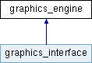

|
潮風フレームワーク
研究開発に特化したコンピューターグラフィックスのための流体ソルバ
|


|
|
潮風フレームワーク
研究開発に特化したコンピューターグラフィックスのための流体ソルバ
|
|
描画処理を行うインターフェース。 [詳解]
#include <graphics_engine.h>

公開型 | |
| enum | FEATURE { FEATURE::OPACITY, FEATURE::_3D } |
| get_supported() で指定出来る機能一覧 [詳解] | |
| enum | MODE { MODE::POINTS, MODE::LINES, MODE::LINE_STRIP, MODE::LINE_LOOP, MODE::TRIANGLES, MODE::TRIANGLE_STRIP, MODE::TRIANGLE_FAN } |
| begin() 関数で指定出来る描画モード。詳しくは https://www.khronos.org/opengl/wiki/Primitive を参照。 [詳解] | |
公開メンバ関数 | |
| virtual | ~graphics_engine ()=default |
| デフォルトデストラクタ。 | |
| virtual void | setup_graphics (std::map< std::string, const void * > params=std::map< std::string, const void * >())=0 |
| グラフィックスエンジンを初期化する。 | |
| virtual std::string | get_graphics_engine_name () const =0 |
| グラフィックスエンジンの名前を得る。 [詳解] | |
| virtual bool | get_supported (FEATURE feature) const =0 |
| 指定された機能がサポートされているか得る。 [詳解] | |
| virtual void | set_viewport (unsigned x, unsigned y, unsigned width, unsigned height)=0 |
| ビューポートを設定する。 | |
| virtual void | get_viewport (unsigned &x, unsigned &y, unsigned &width, unsigned &height) const =0 |
| ビューポートを得る。 | |
| virtual void | set_2D_coordinate (double left, double right, double bottom, double top)=0 |
| 2次元座標系を設定する。 [詳解] | |
| virtual void | look_at (const double target[3], const double position[3], const double up[3], double fov, double near, double far)=0 |
| 視野角、カメラの位置、ターゲット位置を指定してカメラを向ける。 [詳解] | |
| virtual void | clear ()=0 |
| キャンバスをクリアする。 | |
| virtual void | get_background_color (double color[3]) const =0 |
| 背景色を得る。 | |
| virtual void | get_foreground_color (double color[3]) const =0 |
| 前景色を得る。 | |
| void | color3 (double r, double g, double b) |
| glColor と同じ。https://www.khronos.org/registry/OpenGL-Refpages/gl2.1/xhtml/glColor.xml を参照。 | |
| void | color4 (double r, double g, double b, double a) |
| glColor と同じ。https://www.khronos.org/registry/OpenGL-Refpages/gl2.1/xhtml/glColor.xml を参照。 | |
| template<class T > | |
| void | color3v (const T *v) |
| glColor と同じ。https://www.khronos.org/registry/OpenGL-Refpages/gl2.1/xhtml/glColor.xml を参照。 | |
| virtual void | color4v (const double *v)=0 |
| glColor と同じ。https://www.khronos.org/registry/OpenGL-Refpages/gl2.1/xhtml/glColor.xml を参照。 | |
| void | color4v (const float *v) |
| glColor と同じ。https://www.khronos.org/registry/OpenGL-Refpages/gl2.1/xhtml/glColor.xml を参照。 | |
| void | vertex2 (double x, double y) |
| glVertex と同じ。https://www.khronos.org/registry/OpenGL-Refpages/gl2.1/xhtml/glVertex.xml を参照。 | |
| void | vertex3 (double x, double y, double z) |
| glVertex と同じ。https://www.khronos.org/registry/OpenGL-Refpages/gl2.1/xhtml/glVertex.xml を参照。 | |
| virtual void | begin (MODE mode)=0 |
| glBegin と同じ。https://www.khronos.org/registry/OpenGL-Refpages/gl2.1/xhtml/glBegin.xml を参照。 | |
| virtual void | end ()=0 |
| glEnd と同じ。https://www.khronos.org/registry/OpenGL-Refpages/gl2.1/xhtml/glEnd.xml を参照。 | |
| virtual void | point_size (double size)=0 |
| glPointSize と同じ。https://www.khronos.org/registry/OpenGL-Refpages/gl2.1/xhtml/glPointSize.xml を参照。 | |
| virtual void | line_width (double width)=0 |
| glLineWidth と同じ。https://www.khronos.org/registry/OpenGL-Refpages/gl2.1/xhtml/glLineWidth.xml を参照。 | |
| template<class T > | |
| void | vertex2v (const T *v) |
| glVertex と同じ。https://www.khronos.org/registry/OpenGL-Refpages/gl2.1/xhtml/glVertex.xml を参照。 | |
| virtual void | vertex3v (const double *v)=0 |
| glVertex と同じ。https://www.khronos.org/registry/OpenGL-Refpages/gl2.1/xhtml/glVertex.xml を参照。 | |
| void | vertex3v (const float *v) |
| glVertex と同じ。https://www.khronos.org/registry/OpenGL-Refpages/gl2.1/xhtml/glVertex.xml を参照。 | |
| virtual void | draw_string (const double *v, std::string str, unsigned size=0)=0 |
| 現在の場所に文字を描く。 [詳解] | |
描画処理を行うインターフェース。
|
strong |
get_supported() で指定出来る機能一覧
| 列挙値 | |
|---|---|
| OPACITY | 透明描画を行えるか |
| _3D | 3次元投影を行えるか |
|
strong |
begin() 関数で指定出来る描画モード。詳しくは https://www.khronos.org/opengl/wiki/Primitive を参照。
| 列挙値 | |
|---|---|
| POINTS | 点群 |
| LINES | 独立した線セグメント |
| LINE_STRIP | 連続した線セグメント |
| LINE_LOOP | 閉じた線 |
| TRIANGLES | 独立した三角形 |
| TRIANGLE_STRIP | 連続した三角形 |
| TRIANGLE_FAN | 扇状に連続した三角形 |
|
pure virtual |
現在の場所に文字を描く。
| [in] | p | 位置。 |
| [in] | str | 文字列。 |
| [in] | size | 文字の大きさ。 |
|
pure virtual |
グラフィックスエンジンの名前を得る。
|
pure virtual |
指定された機能がサポートされているか得る。
| [in] | feature | サポートされているか確認したい機能 |
true が、そうでなければ false が返る。
|
pure virtual |
視野角、カメラの位置、ターゲット位置を指定してカメラを向ける。
| [in] | target | ターゲット位置。 |
| [in] | position | カメラの位置。 |
| [in] | top | 上方向のユニットベクトル。 |
| [in] | fov | 視野角。 |
| [in] | near | ニアクリッピング。 |
| [in] | far | ファークリッピング。 |
|
pure virtual |
2次元座標系を設定する。
| [in] | left | 左端の X 軸の座標。 |
| [in] | right | 右端の X 軸の座標。 |
| [in] | bottom | 下端の Y 軸の座標。 |
| [in] | top | 上端の Y 軸の座標。 |
 1.8.17
1.8.17